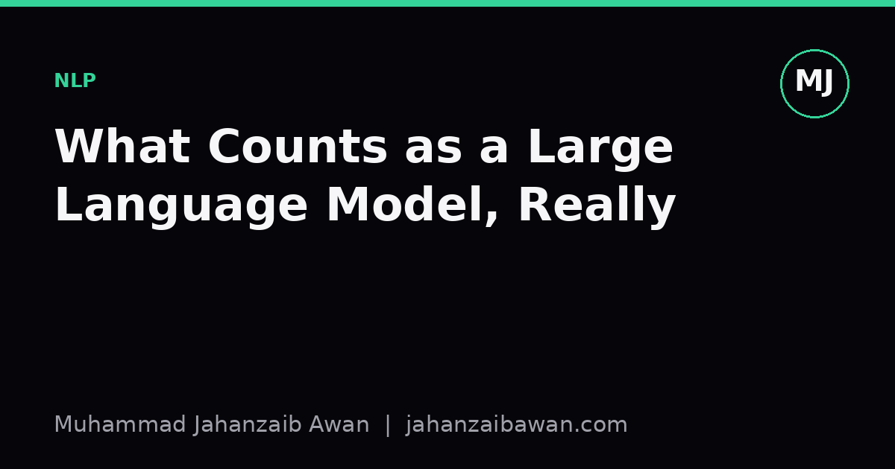

What Counts as a Large Language Model, Really
The phrase gets used for everything from a ten million parameter classifier to a trillion parameter chatbot. I try to pin down what the label should actually mean.

Why the definition keeps slipping
If you ask five people in machine learning to define a large language model, you will probably get five different thresholds, and at least two of them will be arguing about something else entirely, usually whether the model counts as intelligent or not. That slipperiness matters because the term now gets used in papers, in marketing copy, and in policy documents, and each of those audiences quietly assumes a different boundary. A regulator might mean anything trained with a certain amount of compute. A researcher might mean anything built on the transformer decoder architecture at scale. A product team might just mean anything that can hold a conversation.
The wiki version of the definition, the kind you get from a quick encyclopaedia summary, usually says something like: a language model with a large number of parameters, trained on a large corpus of text, typically using a transformer architecture, capable of general purpose language understanding and generation. That is a reasonable starting point and I do not want to dismiss it, but every word in it is doing more work than it looks like, and the boundaries it implies are softer than the sentence suggests.
Consider the word large on its own. In 2018, a model with 100 million parameters counted as large by the standards of the field at the time. By 2023, models with 100 million parameters were considered small, sometimes used as student models in distillation pipelines rather than as the main event. The threshold is not fixed, it is relative to the current frontier, which means any absolute number you pin to the definition will look dated within a couple of years. That is not a flaw in any one definition, it is a structural problem with defining a category by a moving target.
Parameter count is a proxy, not the thing itself
Here is a concrete worked example to show why parameter count alone is a weak criterion. Suppose you have two models. Model A has 7 billion parameters, trained on a few hundred billion tokens of general web text, using a standard transformer decoder with next token prediction as the objective. Model B has 7 billion parameters too, but it was trained from scratch on a narrow corpus of structured medical codes, with a vocabulary of a few thousand tokens and a context window of 128. Both have the same parameter count. Only one of them behaves like what practitioners mean by a large language model, because the other lacks the breadth of training data and the generality of task that make the label useful.
This tells you that parameter count is a proxy for something else: capacity to absorb broad, diverse linguistic patterns and generalise across tasks it was never explicitly trained for. The number of parameters correlates with that capacity, roughly, because more parameters usually means more room to store statistical regularities from a large corpus. But correlation is not the definition. A small model trained cleverly on a narrow domain is not a large language model even if you inflate its parameter count for no good reason, and a genuinely broad model trained with a novel architecture that is not a plain transformer might still deserve the label even if it breaks the architectural part of the wiki sentence.
There is also the training data side, which gets underweighted in casual definitions. A model trained on 50 billion tokens of narrow, repetitive text is not doing the same job as one trained on a genuinely diverse trillion token corpus spanning code, dialogue, technical writing, and informal prose. Two models with identical architectures and similar parameter counts can behave completely differently depending on what they saw, and the behavioural differences are often more diagnostic of whether something is a large language model in the practical sense than the architecture diagram ever is.
Why the fuzziness has practical consequences
This is not just pedantry, because the fuzziness causes real confusion in evaluation and claims. I have seen papers compare a 1.3 billion parameter model against a 70 billion parameter model under the same banner of large language model evaluation, as though the comparison tells you something clean about architecture or method, when in fact scale alone could explain most of the gap. If your benchmark results do not control for or at least clearly report scale, training data composition, and compute budget, then calling both systems large language models and comparing them head to head risks a comparison that looks like an apples to apples test but is not.
There is a related trap around what people call emergent abilities, where a capability appears to show up only once a model crosses some scale threshold. Some of this is genuine and interesting, some of it is an artefact of how a metric is measured, since certain scoring methods are discontinuous and will look flat until a model crosses a quality threshold, then jump suddenly. Before accepting a claim that a capability emerged specifically because a model became large enough to count as an LLM, I want to see the metric checked for that kind of discontinuity, and I want to see the comparison made against models trained with consistent data and recipe, not just models grabbed off different leaderboards.
For anyone writing about this field, documenting evaluation work, or deciding how to describe their own models, I think the practical rule is to stop asking whether something counts as a large language model and start specifying the three things that actually matter: approximate parameter count or compute budget, the scale and diversity of training data, and the breadth of tasks the model is actually evaluated on. State those three things plainly in any writeup, and the label itself becomes almost unnecessary, because the reader gets the information that the label was trying, and failing, to compress into one adjective.